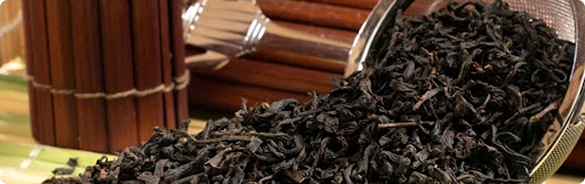
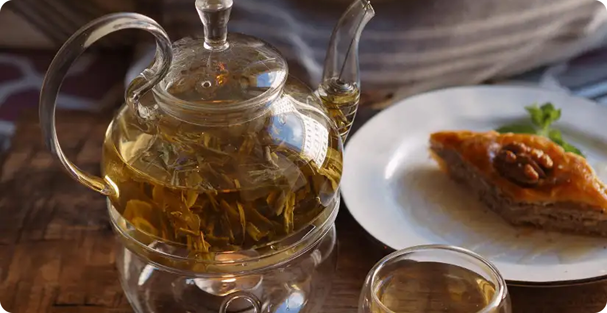
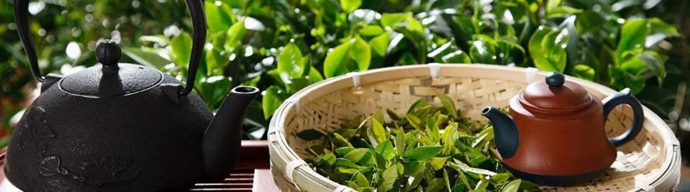

Почему Кудин пьют во время простуды и как избежать горечи при заваривании напитка?
20 ноября 2025

Три чашки чая в день снижают риск депрессии на 37%. Интересно, что защитный механизм связан с действием на кишечник, а не на мозг. Китайские учёные систематизировали последние исследования о роли катехинов чая в восстановлении кишечного микробиома.
Кишечник влияет на мозг, а мозг — на кишечник

Антидепрессивное свойство чая связано с полифенолами, в первую очередь с катехином EGCG (галлат эпигаллокатехина). Больше всего его в зеленом чае. Кроме мощных антиоксидантных свойств, EGCG влияет на состав кишечного микробиома, увеличивая рост полезных бактерий и купируя вредные.

Эксперт в церемониальном чае
«Связь кишечника и депрессии двусторонняя: длительный стресс нарушает микробиом, но и нарушение микробиома может привести к тревожности и психическим расстройствам. Связь полифенолов и микробиома тоже двусторонняя: микроорганизмы превращают катехины в более активные формы, которые легко всасываются».
Как чай влияет на микробиом кишечника
Есть данные о положительном действии пищевых добавок с высокой дозой EGCG (до 3 г в день) в качестве вспомогательной терапии при лечении депрессии. Однако при этом существенно возрастает риск поражения печени. В любом случае в чае такой дозировки нет. В грамме листового зеленого чая около 20–40 мг EGCG, в грамме матчи — 50–55 мг.

Исследования показывают, что регулярное употребление не только зеленого чая, но и пуэра ослабляет и предотвращает симптомы тревожности, стресса и депрессии. Вероятно, это связано с синергическим эффектом полифенолов, L-теанина и кофеина.
Появятся ли препараты от депрессии на основе чая
Последние исследования влияния катехинов на кишечный микробиом могут сделать прорыв в лечении нейропсихических расстройств. Однако учёные подчёркивают, что терапевтический потенциал чая и EGCG требует дальнейшего изучения. Для создания профилактических и лекарственных антидепрессивных препаратов ещё не хватает точных данных о механизмах действия EGCG и синергических эффектах всех компонентов в составе чая. Также для усиления действия катехинов необходимо увеличить их биодоступность. Возможно, этот вопрос решат передовые нанотехнологии.